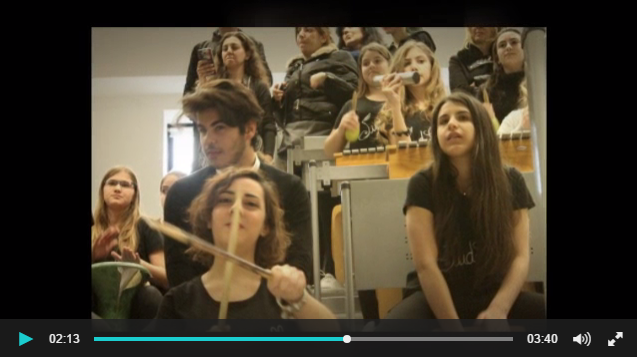
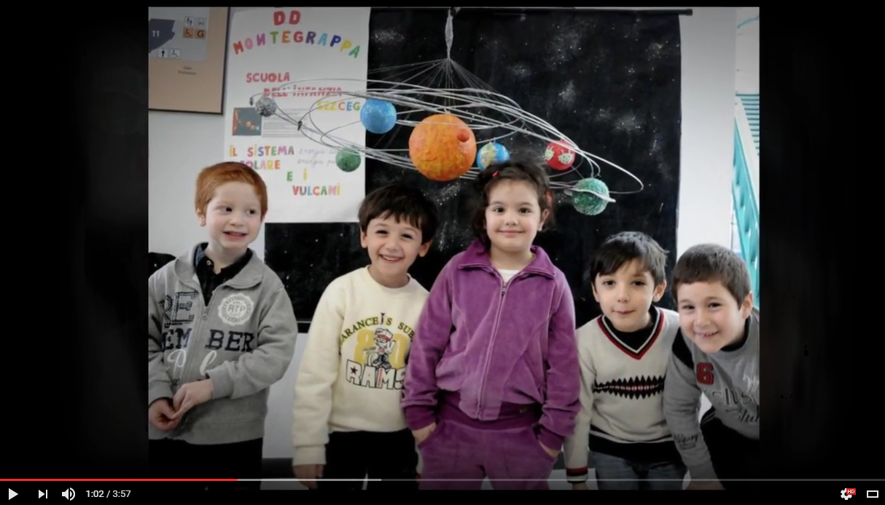

You are hereNews
News
Le ultime notizie di PalermoScienza
Dieci anni con Esperienza inSegna (la prima pillola)!
Ha avuto inizio oggi, martedì 14 febbraio, la decima edizione della manifestazione Esperienza inSegna, organizzata dall'Associazione PALERMOSCIENZA e dedicata quest'anno all'AMBIENTE.
Mentre negli ampi spazi del Polidiattico gli espositori cominciavano a presentare al pubblico i propri exhibit ed esperimenti, si svolgeva l'inaugurazione della manifestazione, caratterizzata quest'anno dall'esibizione Paesaggi sonori a cura di Eliana Danzì con i giovani componenti del Gruppo SudOrff della scuola secondaria i 1° grado Vittorio Emanuele III di Palermo. L'inaugurazione è stata introdotta da Carmelo Arena, presidente dell'Associazione PALERMOSCIENZA, e ha visto gli interventi di Girolamo Cirrincione, Prorettore alla Ricerca dell'Università degli Studi di Palermo, di Barbara Evola, Assessore comunale alla Scuola e realtà dell'infanzia e del sindaco di Palermo, Leoluca Orlando.
Tra i numerosi appuntamenti della giornata di apertura, l'interessante laboratorio Dimostrazione di disostruzione pediatrica a cura della Croce Rossa Italiana, Comitato di Palermo.
A domani!
Esperienza inSegna compie dieci anni!
Sta per arrivare la X ... Esperienza inSegna!
Quella del 2017 sarà la decima edizione di "Esperienza inSegna", ormai da tempo uno dei più importanti festival a tema del nostro paese. Si terrà 14 al 23 febbraio 2017 a Palermo, sempre presso il "Polididattico Edificio 19", all'interno del polo universitario in Viale delle Scienze. Pubblicheremo presto i dettagli.
Nel frattempo abbiamo creato questo video che ci emoziona e che ci fa viaggiare lungo le edizioni passate. È la nostra cartolina di invito :)
Laboratori natalizi presso l'Ecomuseo di Palermo

Dal 21 dicembre 2016 al 7 gennaio 2017, presso l'Ecomuseo Urbano Mare Memoria Viva di Palermo (via Messina Marine, 20), sarà possibile prendere parte ai diversi appuntamenti programmati dell'Ecomuseo per il calendario natalizio, quali rivisitazioni animate di opere musicali, laboratori scientifici, visite guidate alle narrazioni dell'Ecomuseo e altro ancora.
Per l'occasione, l'Associazione PALERMOSCIENZA ha curato tre diversi laboratori dedicati ai bambini dai 5 agli 8 anni, che si svolgeranno tutti in orario pomeridiano, dalle 16.00 alle 18.00, secondo il seguente calendario:
-
Mercoledì 21 dicembre 2016
Navigare a vista
-
Giovedì 29 dicembre 2016
Arte e... matematica
-
Martedì 3 gennaio 2017
Il botanico che è in noi
I laboratori sono a pagamento (costo singolo partecipante 5,00 €) e prevedono un massimo di 30 partecipanti.
Per consultare il programma in dettaglio cliccare qui (da mettere gli allegati bimestrale natale 1 e bimestrale natale 2, che mi hanno mandato slegati)
Per informazioni e prenotazioni scrivere segreteria@palermoscienza.it oppure telefonare al 333 4612148 (numero attivo dal lunedì al venerdì, dalle 9.00 alle 13.00 e dalle 15.00 alle 19.00, escluso lunedì 26 dicembre).
Vi aspettiamo numerosi!
Un breve video raccornto della XXVI Settimana della Cultura Scientifica e Tecnologica
 Sabato 29 ottobre 2016, nell'ambito della XXVI Settimana della Cultura Scientifica e Tecnologica promossa dal MIUR, l'associazione PALERMOSCIENZA, in collaborazione con l'INAF-Osservatorio Astronomico di Palermo e il Museo dei Meccanismi e dei Motori dell’Università di Palermo, ha organizzato "Noi, il Sole e l'ambiente", iniziativa ricca di attività dedicate alle famiglie quali i laboratori ispirati al tema Scienza e Ambiente, le osservazioni del Sole e le visite guidate al campo solare.
Sabato 29 ottobre 2016, nell'ambito della XXVI Settimana della Cultura Scientifica e Tecnologica promossa dal MIUR, l'associazione PALERMOSCIENZA, in collaborazione con l'INAF-Osservatorio Astronomico di Palermo e il Museo dei Meccanismi e dei Motori dell’Università di Palermo, ha organizzato "Noi, il Sole e l'ambiente", iniziativa ricca di attività dedicate alle famiglie quali i laboratori ispirati al tema Scienza e Ambiente, le osservazioni del Sole e le visite guidate al campo solare.
XXVI Settimana della Cultura Scientifica e Tecnologica: Noi, il Sole e l'ambiente

Dal 24 al 29 ottobre 2016 avrà luogo la XXVI Settimana della Cultura Scientifica e Tecnologica, manifestazione promossa annualmente dal MIUR. Anche quest'anno l'Associazione PALERMOSCIENZA vi parteciperà proponendo, in collaborazione con l'INAF-Osservatorio Astronomico di Palermo e il Museo dei Meccanismi e dei Motori dell’Università degli Studi di Palermo, una serie di attività dedicate alle famiglie.
L'iniziativa intitolata Noi, il Sole e l'ambiente si terrà sabato 29 ottobre, dalle 9.00 alle 13.00, presso l'Università degli Studi di Palermo e prevede attività di laboratorio, osservazioni del Sole e visite guidate al campo solare.
Fulcro dell'iniziativa saranno i laboratori ideati dall'Associazione PALERMOSCIENZA e ispirati al tema Scienza e Ambiente, uno tra i temi suggeriti dal MIUR per l'occasione.
Presso le aule del Museo dei Motori e dei Meccanismi (Viale delle Scienze, edificio 8), gli esperti dell'Associazione parleranno del Sole analizzandolo sia dal punto di vista astronomico che attraverso il suo impatto sul mondo biologico. Nel laboratorio di astronomia le attività saranno adattate in base all'età dei partecipanti, scegliendo la modalità gioco-imparo per i più piccoli e le simulazioni di osservazioni, utilizzando il sito dell’INAF dedicato all’educational e il sito SOHO della NASA, per i ragazzi più grandi e gli adulti. Nel laboratorio di biologia sarà mostrata la respirazione delle piante attraverso l’uso di sensori, si osserverà la struttura di alcuni esemplari di foglie al microscopio e sarà estratta la clorofilla. Anche queste attività saranno adattate in base alle varie fasce di età dei partecipanti. I laboratori, ognuno della durata di 15-20 minuti, verranno ripetuti a rotazione.
Nello spazio aperto antistante l'entrata del Museo dei Motori e dei Meccanismi, il pubblico sarà invitato a osservare il Sole, in totale sicurezza, con due telescopi: un telescopio equipaggiato con un filtro che taglia la luce solare del del 99% permettendo la visione della fotosfera solare, e un telescopio coronado con filtro H-Alpha che permette la visione della cromosfera solare.
I visitatori potranno inoltre raggiungere il vicino campo solare ubicato accanto la sede del Consorzio ARCA (Viale delle Scienze, edificio 16), l'incubatore di imprese dell'Università degli Studi di Palermo, aperto al pubblico per l'occasione. Si tratta del primo impianto pilota in Europa sviluppato in contesti urbani, basato sulla tecnologia degli specchi concentratori capace di fornire energia elettrica, termica e frigorifera per molteplici usi, ed è stato realizzato nell’ambito del progetto STS-Med (Small scale thermal solar district units for Mediterranean communities).
Le visite guidate partiranno dal Consorzio ARCA.
Tutte le attività sono gratuite e non necessitano di prenotazione.
Per informazioni, contattare l'Associazione PALERMOSCIENZA all'indirizzo mail segreteria@palermoscienza.it e al seguente numero di cellulare: 3668028227
Notte Europea dei Ricercatori 2016: PALERMOSCIENZA vi invita alla GAM
Venerdì 30 settembre 2016, si rinnova l'appuntamento con la Notte Europea dei Ricercatori, iniziativa che la Commissione Europea promuove fin dal 2005 con l'intento di creare occasioni di incontro tra ricercatori e cittadini, per diffondere la cultura scientifica e la conoscenza delle professioni della ricerca in un contesto informale e stimolante che possa sensibilizzare i giovani alle carriere scientifiche attraverso un dialogo diretto con i professionisti del settore.
La manifestazione propone numerosi eventi ricchi di esperimenti e dimostrazioni scientifiche dal vivo, attività di apprendimento per bambini, mostre e visite guidate, conferenze e seminari divulgativi, spettacoli e concerti.
In un contesto che coinvolge ogni anno migliaia di ricercatori e istituzioni di ricerca di tutti i paesi europei, l'Associazione propone il laboratorio per famiglie Ma che ore sono? a cura di PALERMOSCIENZA e dI Civita Sicilia, che avrà luogo presso la Galleria d'Arte Moderna di Palermo, alle 19.30 e con una replica alle 20.30.
Il laboratorio parte dall'analisi di alcune opere custodite all'interno della Galleria, indagate e narrate attraverso la duplice lettura – quella artistica e quella scientifica – che il più delle volte rivela gli inattesi legami esistenti tra aspetti ritenuti in realtà da sempre distanti. Così le opere di importanti artisti, tra i quali Francesco Lojacono, si narrano a noi come connubio tra conoscenza scientifica e conoscenza artistica, visibile, ad esempio, in una precisa resa atmosfera della luce o nella forma di un'ombra che traduce una determinata posizione del Sole.
La partecipazione al laboratorio è gratuita con prenotazione obbligatoria (per numero massimo di 30 persone).
Info e prenotazioni visite guidate 091.8431605 e didattica@gampalermo.it.
Per scaricare il programma della Notte Europea dei Ricercatori cliccare qui.
Questo il sito web https://sites.google.com/site/sharper2014nottedeiricercatori/
PALERMOSCIENZA partecipa al Sun Med Festival

L'autunno dell'associazione PALERMOSCIENZA inizierà con la partecipazione al Sun Med Festival, che si terrà presso il Consorzio Arca di Palermo dal 26 settembre all'1 ottobre 2016, in partenariato con il Comune e l’Università degli Studi di Palermo, INAF - Osservatorio Astronomico di Palermo, ENEA, Energia Media, IDEA, Italia Solare, Legambiente Sicilia, Protezione Civile Sicilia, ANIMA Investment Network, ENPI CBC MED e AviTeM, Vivere Ateneo, Sicilia Journal, Balarm, neu[nòi], PUSH Palermo, EEN, GSES, Science&Joy, Webinarpro.
Organizzato in piena sinergia tra il Consorzio Arca, l’Università degli Studi di Palermo e il Comune di Palermo, il Sun Med Festival è il primo festival dell’Energia Solare della Città di Palermo che nasce col desiderio e l'obiettivo di sensibilizzare non solo studenti e ricercatori, ma l'intera cittadinanza, alle innumerevoli opportunità che l’energia solare offre sul piano ambientale, climatico ed economico.
Protagonista del Festival sarà il Sole che verrà osservato, indagato e vissuto attraverso numerosi eventi di differente natura quali laboratori, mostre, exhibit di aziende e startup che operano nel settore, e, concetrato nei giorni di venerdì 30 Settembre e sabato 1 Ottobre, un fitto programma di mostre, giochi, conversazioni, performance artistiche e degustazioni.
Tra i numerosi eventi, ideati con l'intento di rimarcare la centralità che il Sole ha avuto nelle civiltà del Mediterraneo e di evidenziare le opportunità che offre per il futuro sostenibile dell’area, segnaliamo:
- i laboratori per le scuole “Sunlab@school” a cura di PALERMOSCIENZA.
- il ciclo di workshop professionali “Aspetti costruttivi e di installazione di un impianto Fresnel poligenerativo” dedicati alle aziende e agli studenti universitari organizzati da Idea s.r.l.(per iscriversi, http://bit.ly/2cqK5Ih).
- il seminario d’apertura “Industry 4.0 and Smart Energy” realizzato da EnergiaMedia, in collaborazione con la rete EEN, che si terrà nella sede di Sicindustria il 27 Settembre, e che verterà sull’importanza di creare sistemi energetici sostenibili ed efficienti dal punto di vista economico e ambientale, per giungere alla rivoluzione industriale definita come 4.0 (iscrizioni sul sito di Industria Media: http://bit.ly/2clVI6h).
- l'attività seminariale “Una marcia in più per gli impianti FV” (30 Settembre, ore 10.00), organizzato da ITALIA Solare in collaborazione con The Green Consulting Group, con l’obiettivo di presentare in maniera chiara e descrittiva le nuove opportunità economiche legate agli impianti fotovoltaici (la partecipazione è gratuita, ma il numero di posti è limitato, ecco il link per iscriversi: http://bit.ly/2cqM2Ey).
- la tavola rotonda “Nuove energie dai processi di rigenerazione urbana” (30 Settembre, ore 15.00) a cura di AUDIS, in collaborazione con Golder Associates (iscrizione sul sito: http://bit.ly/2cae8Wj).
- l'hackathon “#SolarHack, sviluppo di soluzioni innovative per l'ottimizzazione di un impianto solare”, organizzato da GDGPalermo in collaborazione con Idea srl, Olomedia, Open Data Sicilia (dalle 14.00 alle 24.00).
- il seminario di Fabio Reale “La luce e la stella sole” (partecipazione tramite iscrizione al sito: http://bit.ly/2cZgPKB) e l’osservazione del Sole curata dall’Istituto Nazionale di Astrofisica di Palermo e da Science&Joy.
- lo Speed Networking “Pallidi VS Abbronzati” di neu [nòi] spazio al lavoro.
- il Convegno Internazionale “Sustainable Energy, solutions for the Mediterranean communities”, (1 Ottobre) organizzato dal Consorzio Arca con EEN - Enterprise Europe Network, durante il quale i rappresentanti di università e centri di ricerca, delle agenzie per l’innovazione e le amministrazioni pubbliche, delle associazioni internazionali e organismi tecnici si confronteranno con l’obiettivo di ottenere una visione completa dei benefici derivanti dall’adozione di sistemi solari avanzati (per registrarsi all’evento, visitare il sito http://bit.ly/2cmzoEg).
- la sessione di talk “Discorsi intorno al Sole”, a cura di Diego Gavagnin, Giuseppe Onufrio e Cesare Silvi
- il Workshop “Visioni per Palermo 2100” a cura di neu [nòi] spazio al lavoro.
- l’inaugurazione dell’impianto solare poligenerativo costruito all’interno del campus universitario palermitano.
Altre attività che segneranno le due date finali del festival sono le exhibition di progetti e prodotti con aziende nel settore energetico, la mostra organizzata dal Gruppo per la Storia dell’Energia Solare dal titolo “I pionieri dell’energia solare” e i laboratori di cucina con dimostrazione del funzionamento delle cucine solari a cura degli IPSSAR Piazza e Borsellino. Tra i momenti ludici, lezioni dimostrative e partite di scacchi l’associazione studentesca Vivere Ateneo, la pittura murale dell’artista Emanuele Poki (a cura di Push Palermo) e le serate musicali che seguiranno gli eventi delle giornate.
Tutte le informazioni riguardo il Sun Med Festival sono fruibili dal sito ufficiale e da due canali social, Facebook e Twitter, che racconteranno la fase preparatoria del festival e, in tempo reale, gli oltre 50 appuntamenti del festival stesso: incontri, laboratori, hackathon, giochi, concerti e workshop alternati a talk ed exhibit con alcuni dei protagonisti dell’economia e dell’innovazione.
Per ulteriori informazioni, s'invita a consultare il sito http://www.sunmedfestival.eu
@sunmedfestival FB:sunmedfestival
Ufficio stampa:
Valentina Nicoletti
mail: redazione@sunmedfestival.eu - Tel: 0916615645 - Cell: 3294311566
PALERMOSCIENZA e Caravaggio Mistery: alla scoperta dei misteri della luce e delle ombre
PALERMOSCIENZA e Caravaggio Mistery: alla scoperta dei misteri della luce e delle ombre
L'Associazione è lieta di informarvi che, in collaborazione con l'Associazione Amici dei Musei Siciliani, sabato 21 maggio alle ore 16.00, presso l'oratorio di San Lorenzo, via dell'Immacolatella n. 5, Palermo (piazza San Francesco d'Assisi), parteciperà all'evento Caravaggio Mistery.
L'oratorio di San Lorenzo ospitava la famosa Natività di Caravaggio, rubata nell'ottobre del 1969. Dalla scorso dicembre la “tela" è ritornata al suo posto: grazie a un'approfondita ricerca e a un sofisticato sistema di rilevazione e di ricostruzione, è stata realizzata una copia del celebre quadro che la stampa ha definito "Caravaggio 2.0”.
Lo scorso dicembre la copia è stata presentata al pubblico alla presenza delle autorità, tra cui anche il Presidente della Repubblica Sergio Mattarella.
Inserito nella programmazione della Settimana delle Culture, l'evento Caravaggio Mistery sarà il primo di una serie che vede coinvolti, ancora una volta, la scienza e l’arte.
Dopo una breve presentazione dell'oratorio a cura delle operatrici dell'Associazione Amici dei Musei Siciliani, gli esperti dell’associazione PALERMOSCIENZA condurranno un laboratorio con l'obiettivo di svelare ai giovani partecipanti i misteri della luce e delle ombre, elementi che hanno reso meravigliosi i dipinti di Caravaggio.
Il laboratorio, della durata complessiva di 2 ore, è destinato a ragazze e ragazzi di età compresa tra gli 8 e i 13 anni e verrà richiesto un contributo di sostegno all'iniziativa di 6 € a partecipante.
Per informazioni e prenotazioni contattare l'Associazione Amici dei Musei Siciliani ai seguenti numeri: +39 3398148936 o +39 3338605399
Vi aspettiamo numerosi!